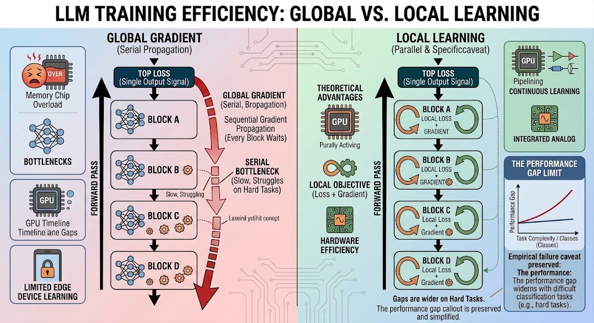

Why language models will need local learning, and what it will take to get there

Every large language model in production today is trained with backpropagation, and the systems built around it are showing strain in several places at once: activation memory that grows with depth and context, pipelines that idle unless fed ever-larger batches, fine-tuning that erodes capabilities the model already had, looped architectures trained only on their last few iterations, and deployed models that cannot learn at all.
In this post we make two arguments. First, these are five consequences of one design decision: every parameter waits on a single error signal computed at the output. Local learning, in which each block of layers updates from a signal it can compute itself, is the only family of methods that removes that dependency. Second, the evidence available in 2026 does not yet support replacing backpropagation with any existing local rule, and we describe what evidence would.
The hidden cost of a single global gradient
Backpropagation is sequential. A layer cannot update until the forward pass has reached the output and the gradient has returned through every layer above it. Depth becomes a serial chain, every intermediate activation is stored until its gradient arrives, and any signal entering at the output reaches every parameter, whether or not it should change.
Training systems manage these costs by trading resources. Activation checkpointing recomputes the forward pass to save memory, at roughly 30% more compute [1, 2]. Pipeline schedules keep accelerators busy by adding microbatches, which enlarges the global batch [3], or by adding memory in zero-bubble variants [4]. Zeroth-order optimizers remove the backward pass and pay with one to two orders of magnitude more steps [5, 6]. None of these removes the dependency; each moves its cost to the least constrained budget.
Where the constraint is starting to bind
Depth and batch size. Activation memory scales with depth, sequence length, and width [2]. Across p pipeline stages, roughly (p−1)/(m+p−1) of the hardware is idle unless the number of microbatches m is much larger than p [3]. Meeting that condition pushes the global batch past the critical batch size, beyond which additional samples no longer reduce training steps [7]. Depth ends up limited by memory, batch size, or both.
Looped architectures. Models such as Huginn [8] and Ouro [9] reuse one block for r iterations to reason in latent space. Backpropagating through r iterations multiplies r Jacobians and grows memory with r, so training is usually truncated. An iso-depth scaling study from April 2026 found that truncation leaves the loop mechanism poorly trained even while validation loss keeps improving [10].
Diffusion blocks. Block diffusion language models (BD3-LM [11], SDAR [12], SDLM [13], and this year's multi-block variants [14]) generate autoregressively over blocks and denoise within each one. Their objective is already local in the iteration dimension, since each denoising step is trained on its own rather than through the refinement chain, which is what looped transformers lack. The price is an objective that cannot be evaluated in one standard forward pass [11] and slower convergence when denoising is coupled across a sequence [13]. Along depth, these models remain fully backpropagated.
Learning on devices. Fine-tuning needs gradients, optimizer state, and stored activations beyond the weights, which limits on-device training to a few billion parameters. Zeroth-order methods fit a 30B model on one 80 GB A100 where backpropagation fits 2.7B [5], at 10–100 times the steps [6]. Deployed models stay frozen.
Post-training. Full-parameter SFT and RL push narrow gradients through every layer. In LoPT [15], fine-tuning Llama-3.1-8B-Instruct on Alpaca reduced GSM8K from 69.7 to 46.6, while stopping the task gradient at the network's midpoint gave 72.1 with 24–36% less peak memory.
New hardware. Analog and photonic substrates run forward passes efficiently but cannot easily implement backpropagation. Wave-based physical networks have been trained without it using a forward-only local rule [16, 17]; a usable local rule is a precondition for training on such hardware.
What local learning achieves today
Not enough. A June 2026 audit compared the strongest Forward-Forward variant with a matched backpropagation baseline and found deficits of 2.4 and 5.9 points on CIFAR-10 and CIFAR-100, widening with the number of classes, and 49.4% on ImageNet-100 where backpropagation exceeds 75% [18]. On an 8 GB GPU, backpropagation with gradient accumulation used less memory and ran faster [18]. Since next-token prediction is classification over roughly 10⁵ classes, a gap that widens with class count is a warning sign for language.
Results on language models this year point the same way. Split Forward Gradient reports that forward-gradient training of a transformer trunk on WikiText-103 did worse than leaving a random trunk frozen [19]. Forward Pass Domain Adaptation adapts 7–8B models without cross-layer backpropagation at 40% less memory, but only in late layers, where the output error approximates the gradient at cosine similarity 0.47–0.59, and full fine-tuning still reaches lower in-domain perplexity [20]. Even LoPT uses a single boundary in post-training only, and a local next-token objective on its lower half severely degraded performance [15].
We read these as one failure: a strictly local objective does not encode the task the model is evaluated on. The methods that succeed either keep backpropagation running within large blocks [21] or reintroduce a global signal by another route [18]. Local architectures are well understood; local objectives that carry enough information are not.
What it would take
A local rule that matches backpropagation on next-token loss from 125M to 1B parameters at compute-optimal token budgets [22], with a gap that does not widen with scale; that holds at 7–8B parameters on a trillion tokens with downstream benchmarks within noise; and that beats checkpointed backpropagation with gradient accumulation on wall-clock time and energy, since peak memory has already proven to be the wrong metric [18].
Training systems are running out of budgets in which to hide the cost of the global gradient. Whether language models will need local learning has, in our view, been settled by the constraints above. Whether a local rule can be found that carries enough information to be worth using is the open question, and the experiments that would answer it are within reach of a single lab.
References
- Chen, T., Xu, B., Zhang, C., and Guestrin, C. (2016). Training deep nets with sublinear memory cost. arXiv:1604.06174.
- Korthikanti, V., Casper, J., Lym, S., McAfee, L., Andersch, M., Shoeybi, M., and Catanzaro, B. (2022). Reducing activation recomputation in large transformer models. arXiv:2205.05198.
- Huang, Y., Cheng, Y., Bapna, A., Firat, O., Chen, M. X., Chen, D., Lee, H., Ngiam, J., Le, Q. V., Wu, Y., and Chen, Z. (2019). GPipe: Efficient training of giant neural networks using pipeline parallelism. NeurIPS 32. arXiv:1811.06965.
- Qi, P., Wan, X., Huang, G., and Lin, M. (2024). Zero bubble pipeline parallelism. ICLR 2024. arXiv:2401.10241.
- Malladi, S., Gao, T., Nichani, E., Damian, A., Lee, J. D., Chen, D., and Arora, S. (2023). Fine-tuning language models with just forward passes. NeurIPS 36. arXiv:2305.17333.
- Zhang, Y., Li, P., Hong, J., Li, J., Zhang, Y., Zheng, W., Chen, P.-Y., Lee, J. D., Yin, W., Hong, M., Wang, Z., Liu, S., and Chen, T. (2024). Revisiting zeroth-order optimization for memory-efficient LLM fine-tuning: A benchmark. ICML 2024. arXiv:2402.11592.
- McCandlish, S., Kaplan, J., Amodei, D., and the OpenAI Dota Team (2018). An empirical model of large-batch training. arXiv:1812.06162.
- Geiping, J., McLeish, S., Jain, N., Kirchenbauer, J., Singh, S., Bartoldson, B. R., Kailkhura, B., Bhatele, A., and Goldstein, T. (2025). Scaling up test-time compute with latent reasoning: A recurrent depth approach. arXiv:2502.05171.
- Zhu, R.-J., et al. (2025). Scaling latent reasoning via looped language models. arXiv:2510.25741.
- Schwethelm, K., Rueckert, D., and Kaissis, G. (2026). How much is one recurrence worth? Iso-depth scaling laws for looped language models. arXiv:2604.21106.
- Arriola, M., Gokaslan, A., Chiu, J. T., Yang, Z., Qi, Z., Han, J., Sahoo, S. S., and Kuleshov, V. (2025). Block diffusion: Interpolating between autoregressive and diffusion language models. ICLR 2025. arXiv:2503.09573.
- Cheng, S., Bian, Y., Liu, D., Zhang, L., Yao, Q., Tian, Z., Wang, W., Guo, Q., Chen, K., Qi, B., and Zhou, B. (2025). SDAR: A synergistic diffusion–autoregression paradigm for scalable sequence generation. arXiv preprint.
- Liu, Y., Cao, Y., Li, H., Luo, G., Chen, Z., Wang, W., Liang, X., Qi, B., Wu, L., Tian, C., Zhang, Y., Li, Y., Lu, T., Qiao, Y., Dai, J., and Wang, W. (2025). Sequential diffusion language models. arXiv:2509.24007.
- Jin, Y., Xu, J., Liu, Y., Xu, C., Tu, Y., Li, J., Tu, D., Yan, X., Yu, K., Liu, P., and Deng, Z. (2026). Multi-block diffusion language models. arXiv:2606.29215.
- Shi, H., Han, T., Wang, P., Wang, Z., Yang, X., and Su, J. (2026). Rethinking local learning: A cheaper and faster recipe for LLM post-training. arXiv:2605.04913.
- Momeni, A., Rahmani, B., Malléjac, M., del Hougne, P., and Fleury, R. (2023). Backpropagation-free training of deep physical neural networks. Science 382, 1297–1303.
- Hinton, G. (2022). The forward-forward algorithm: Some preliminary investigations. arXiv:2212.13345.
- Chen, Y. (2026). Synthetic benchmarks overstate Forward-Forward scaling: Real-data limits of layer-local training. arXiv:2606.06539.
- Qin, T. and Huang, W.-M. (2026). Backpropagation-free trunk training via the split forward gradients. arXiv:2607.16612.
- Patil, R., Dennis, S., Guo, H., and Shabahang, K. (2026). Forward pass domain adaptation (without cross-layer backpropagation). arXiv:2608.14563.
- Gomez, A. N., Key, O., Perlin, K., Gou, S., Frosst, N., Dean, J., and Gal, Y. (2022). Interlocking backpropagation: Improving depthwise model-parallelism. JMLR 23. arXiv:2010.04116.
- Hoffmann, J., Borgeaud, S., Mensch, A., et al. (2022). Training compute-optimal large language models. NeurIPS 35. arXiv:2203.15556.